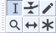

Selecting Audio - the basics
- selecting the entire project, or
- mouse selecting only a region of audio in one or more tracks.
Once all or a region is selected, you can then change that selection's sound with an effect. Another common action is to delete or move the region of audio.
 Selecting a region using the mouse
Selecting a region using the mouse
The easiest way to select a region of audio is to click the left mouse button anywhere inside of an audio track, then drag (in either direction) until the other edge of your selection is made, then release the mouse.
If Selection tool is not selected (default setting), choose  from Tools Toolbar, below:
from Tools Toolbar, below:
- 
Selecting the whole of an individual track
The whole of an individual track can be selected by clicking in the Track Control Panel to the left of a track. Make sure that you click in a neutral area of the Track Control Panel, not inside one of the buttons or sliders.
Selecting the entire project
You can select the entire length of all tracks on screen with or use the shortcut Ctrl + A (or ⌘ + A on a Mac).
Auto-Select
There is a setting in Tracks Behaviors Preferences called "Auto-select, if selection required" that saves the need to make a time selection where you want to apply the edit to entire tracks.
- If you issue an editing command that depends on having a time selection but there is no time selection present, the entire project is auto-selected.
- If some audio tracks are selected but not others, the entire time range of just those selected tracks is auto-selected.
This setting is "off" by default in Audacity. You will need to turn it on if you wish to have Auto-select act on your projects.